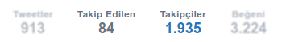

Not: Bloklama baþladýðýnda iþlem miktarýna baðlý olarak sayfa uzun süre yanýt vermeyebilir. Twitter'ý yeni sekmede açýp kullanmaya devam edebilirsiniz.
Takip Edilen(Following) ve Takipçiler(Followers) sayfalarýnda çalýþýr. Sayfaya gidip tekrar deneyiniz.
